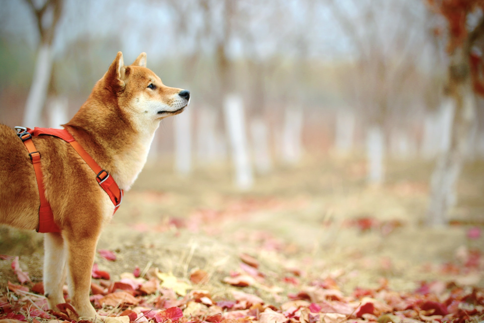

Un réseau social dédié aux animaux, à votre disposition !

Image libre disponible sur le site Unsplash.com
Un attachement tout particulier pour les animaux
Depuis tout petit au contact des animaux, j’accorde une réelle importance au bien-être animal. Ils ressentent des émotions, exactement comme nous les humains, il est donc important de bien s’en occuper !
Chevaux, chiens, oiseaux… J’ai eu la chance de grandir aux côtés de magnifiques animaux. Chaque espèce nécessite des besoins différents, il est important de bien les cerner. Les différents moyens de garde que propose Bibou sont une très bonne chose.
En quoi mon profil peut correspondre à cette entreprise ?
Comme il a été dit plus haut, depuis mon plus jeune âge je côtoie au quotidien beaucoup d’animaux. J’en ai vu grandir, d’autres partir à jamais… La vie est trop courte et trop précieuse pour en oublier que les animaux méritent aussi une place importante dans notre société.
Intégrer cette entreprise serait pour moi une chance de mêler deux passions : le numérique et les animaux.
Bibou se bat pour offrir de meilleures conditions de vie pour les animaux qui nous entourent, c’est une cause que j’aimerais partager avec eux !
L’abandon des animaux, une idée à bannir !
Nous sommes en France le pays qui recense le plus d’abandons parmi toute l’Europe. C’est inacceptable quand on sait que les animaux ressentent eux aussi la tristesse.
Militer contre les abandons, c’est un point que j’aimerais énormément approfondir en rejoignant Bibou. Je pourrais mettre en place des campagnes de sensibilisation, notamment par le biais des réseaux sociaux.
La volonté d’apporter tout ce dont je suis capable
En vous rejoignant, j’aimerais apporter tout ce dont un community manager doit apporter à une entreprise. Animer la communauté, lancer des campagnes publicitaires, gérer l’image de Bibou sur le web. Tout ceci me tiendrait très à cœur, car il est évident que plus le réseau social rayonnera, et plus il y aura d’animaux heureux !